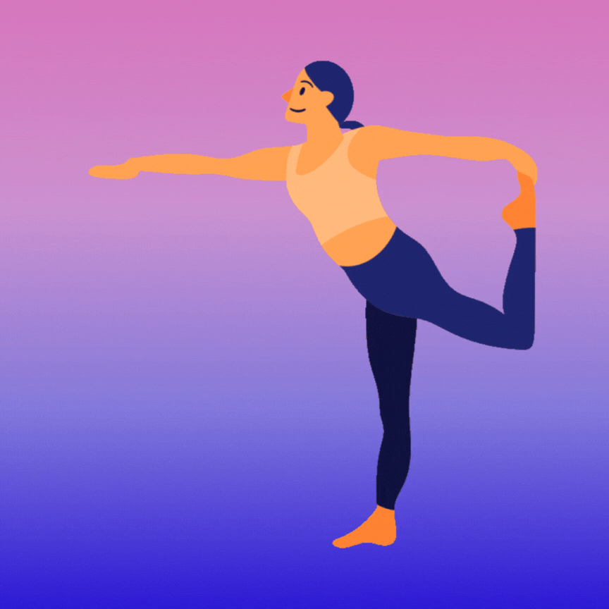
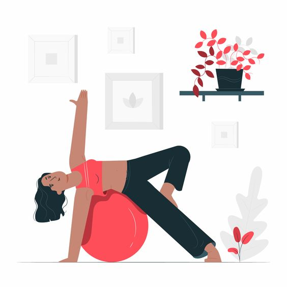
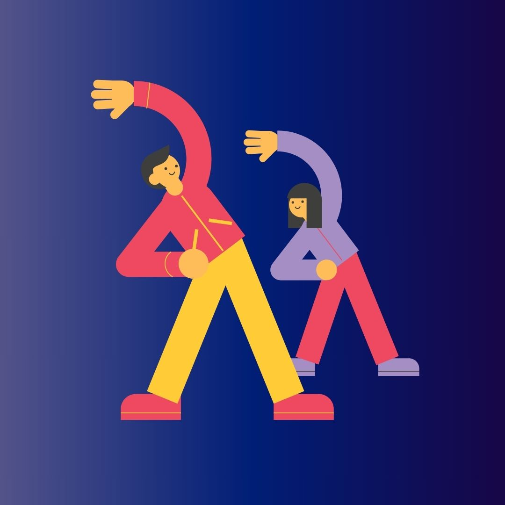

“Exercise is the most potent and underrated antidepressant.” -Bill Phillips
Welcome to our digital sanctuary, where we believe in fostering a harmonious relationship between mental health and fitness.
In a world that often moves at a relentless pace, it's essential to recognize the profound connection between the mind and body.
In this blog, we'll explore the integration of mental well-being and physical fitness, offering practical insights and tips to help you achieve balance.
Embark on a transformative journey with yoga, a holistic practice celebrated for its profound impact on mental health.
Through a harmonious blend of physical postures, mindful breathing, and meditation, yoga provides a sanctuary for stress reduction, anxiety and depression management, and emotional regulation.
Discover the power of the mind-body connection as you cultivate self-awareness and resilience.
The practice becomes a personal journey, fostering a deep connection between the individual and their inner world.
With its therapeutic benefits, yoga not only improves concentration and sleep but also fosters a sense of community, creating a space for mental well-being and balance in life.
click here to take you to yoga section
Pilates, a dynamic and mindful exercise method, extends its benefits beyond physical fitness to positively impact mental well-being.
Rooted in controlled movements and focused breathing, Pilates encourages a harmonious mind-body connection.
Through precise and intentional exercises, practitioners experience reduced stress, enhanced concentration, and improved mood.
The emphasis on core strength and alignment not only fosters physical stability but also cultivates mental resilience.
Pilates serves as a sanctuary for mindfulness, offering a space to unwind, center the mind, and embrace a holistic approach to mental health and overall well-being.
click here to go pilates section
Stretching is not only a physical practice but also a powerful tool for enhancing mental well-being.
As you engage in deliberate stretches, the mind follows suit, unwinding tension and promoting a sense of relaxation.
This mindful approach to stretching encourages a connection between the body and mind, fostering a moment of respite from the demands of daily life.
The deliberate focus on breath and movement during stretching releases built-up stress, contributing to mental clarity and a more centered state of being.
Incorporating stretching into your routine becomes a holistic practice that not only promotes flexibility and physical well-being but also offers a serene escape for the mind, creating a harmonious balance for overall mental health.
click here to go stretching exercises section
here is the intense hiit section
 High-Intensity Interval Training (HIIT) isn't just a physical workout; it's a powerful catalyst for emotional release and enhanced mental well-being.
High-Intensity Interval Training (HIIT) isn't just a physical workout; it's a powerful catalyst for emotional release and enhanced mental well-being.
As you push your body through short bursts of intense exercises followed by brief recovery periods, HIIT triggers the release of endorphins, the body's natural mood lifters.
This dynamic workout not only helps manage stress and anxiety but also creates a sense of accomplishment that transcends the physical realm.
The rhythmic intensity of HIIT engages both body and mind, offering a therapeutic outlet for pent-up emotions and contributing to a positive, energized mental state.
Elevate your mood and boost mental resilience with HIIT – where the intensity of the workout becomes a gateway to emotional release and improved mental health.
click here to go HIIT section
In the pursuit of a fulfilling and balanced life, the integration of mental health and fitness is a holistic approach that can yield profound results.
Embrace the journey, listen to your body, and prioritize both your physical and mental well-being.
As you embark on this path, remember that true harmony lies in the synergy between a healthy mind and a strong, resilient body.